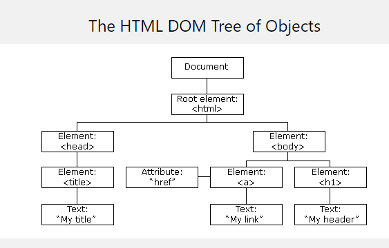
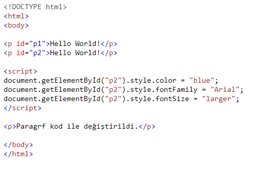

DOCUMENT OBJECT MODEL
Bir web sayfası yüklendiğinde, tarayıcı sayfanın bir Belge Nesne Modeli oluşturur.
HTML DOM modeli, bir Nesneler ağacı olarak oluşturulur:

Nesne modeliyle JavaScript, dinamik HTML oluşturmak için gereken tüm gücü alır:
*JavaScript sayfadaki tüm HTML öğelerini değiştirebilir
*JavaScript sayfadaki tüm HTML özelliklerini değiştirebilir
*JavaScript sayfadaki tüm CSS stillerini değiştirebilir
*JavaScript mevcut HTML öğelerini ve özelliklerini kaldırabilir
*JavaScript yeni HTML öğeleri ve özellikleri ekleyebilir
*JavaScript, sayfadaki mevcut tüm HTML etkinliklerine tepki verebilir
*JavaScript sayfada yeni HTML etkinlikleri oluşturabilir
DOM nedir?
*DOM, bir W3C (World Wide Web Consortium) standardıdır.*DOM, belgelere erişmek için bir standart tanımlar:
"W3C Belge Nesne Modeli (DOM), programların ve komut dosyalarının bir belgenin içeriğine, yapısına ve stiline dinamik olarak erişmesine ve güncellemesine olanak tanıyan platform ve dilden bağımsız bir arabirimdir."
W3C DOM standardı 3 farklı parçaya ayrılmıştır:
*Core DOM - tüm belge türleri için standart model
*XML DOM - XML belgeleri için standart model
*HTML DOM - HTML belgeleri için standart model
HTML DOM nedir?
HTML DOM, HTML için standart bir nesne modeli ve programlama arabirimidir. Şunu tanımlar:*Nesne olarak HTML öğeleri
*Tüm HTML öğelerinin özellikleri
*Tüm HTML öğelerine erişme yöntemleri
*Tüm HTML öğeleri için etkinlikler
*Başka bir deyişle: HTML DOM, HTML öğelerini alma, değiştirme, ekleme veya silme standardıdır.
JavaScript - HTML DOM Yöntemleri HTML DOM yöntemleri, (HTML Elements'ta) gerçekleştirebileceğiniz eylemlerdir. HTML DOM özellikleri, ayarlayabileceğiniz veya değiştirebileceğiniz değerlerdir (HTML Öğelerinin).
DOM Programlama Arayüzü
*HTML DOM'ye JavaScript (ve diğer programlama dilleri) ile erişilebilir.*DOM'de, tüm HTML öğeleri nesne olarak tanımlanır.
*Programlama arayüzü, her nesnenin özellikleri ve yöntemleridir.
*Özellik, alabileceğiniz veya ayarlayabileceğiniz bir değerdir (HTML öğesinin içeriğini değiştirmek gibi).
*Yöntem, yapabileceğiniz bir eylemdir (HTML öğesi eklemek veya silmek gibi).
Örnek
Ekran Çıktısı
My First Page
Hello World!Bir HTML öğesine erişmenin en yaygın yolu, öğenin kimliğini kullanmaktır. Yukarıdaki örnekte getElementById bir yöntem, innerHTML ise bir özelliktir.
GetElementById Yöntemi
Bir HTML öğesine erişmenin en yaygın yolu, öğenin kimliğini kullanmaktır.Yukarıdaki örnekte getElementById yöntemi, öğeyi bulmak içinid = "demo" kullanmıştır.
innerHTML Özelliği
*Bir öğenin içeriğini almanın en kolay yolu innerHTML özelliğini kullanmaktır.*innerHTML özelliği, HTML öğelerinin içeriğini almak veya değiştirmek için kullanışlıdır.
*innerHTML özelliği, html ve body dahil olmak üzere herhangi bir HTML öğesini almak veya değiştirmek için kullanılabilir.
HTML DOM Belge Nesnesi
Belge nesnesi web sayfanızı temsil eder. Bir HTML sayfasındaki herhangi bir öğeye erişmek istiyorsanız, her zaman belge nesnesine erişmeye başlarsınız.Aşağıda, HTML'ye erişmek ve bunları değiştirmek için belge nesnesini nasıl kullanabileceğinize ilişkin bazı örnekler verilmiştir.
HTML Öğelerini Bulma
| yöntem | Açıklama |
|---|---|
| document.getElementById(id) | Öğe kimliğine göre öğe bulma |
| document.getElementsByTagName(name) | Etiketleri adıyla öğeleri bulma |
| document.getElementsByClassName(name) | Sınıf adına göre öğeleri bulma |
HTML Öğelerini Değiştirme
| yöntem | Açıklama |
|---|---|
| element.innerHTML = new html content | Bir öğenin iç HTML'sini değiştirme |
| element.attribute = new value | HTML öğesinin özellik değerini değiştirme |
| element.style.property = new style | HTML öğesinin stilini değiştirme |
| element.setAttribute(attribute, value) | HTML öğesinin özellik değerini değiştirme |
Eleman Ekleme ve Silme
| yöntem | Açıklama |
|---|---|
| document.createElement(element) | HTML öğesi oluşturma |
| document.removeChild(element) | HTML öğesini kaldırma |
| document.appendChild(element) | HTML öğesi ekle |
| document.replaceChild(new, old) | HTML öğesini değiştirme |
| document.write(text) | HTML çıktı akışına yazma |
Olay İşleyicileri Ekleme
document.getElementById(id).onclick = function(){code} --> Bir onclick etkinliğine olay işleyici kodu ekleme
HTML Öğelerini Bulma
Genellikle JavaScript ile HTML öğelerini değiştirmek istersiniz. Bunu yapmak için önce elemanları bulmalısınız. Bunu yapmanın birkaç yolu vardır:*HTML öğelerini kimliğe göre bulma
*Etiket adına göre HTML öğeleri bulma
*Sınıf adına göre HTML öğeleri bulma
*CSS seçicileri ile HTML öğeleri bulma
*HTML nesnesi koleksiyonlarına göre HTML öğelerini bulma
Kimliğe Göre HTML Öğesi Bulma
DOM'de bir HTML öğesi bulmanın en kolay yolu, öğe kimliğini kullanmaktır. Bu örnek id = "intro" olan öğeyi bulur:Örnek
Ekran Çıktısı
Kimliğe Göre HTML Öğelerini Bulma
Hello World!bu örnek getElementsById metodu için.
Giriş paragrafındaki metin Hello World!
Öğe bulunursa, yöntem öğeyi nesne olarak döndürür (myElement öğesinde). Öğe bulunamazsa, myElement öğesi null içerir.
Sınıf Adına Göre HTML Öğelerini Bulma
Aynı sınıf adına sahip tüm HTML öğelerini bulmak istiyorsanız, getElementsByClassName () öğesini kullanın. Bu örnek, class = "intro" içeren tüm öğelerin bir listesini döndürür.Örnek
Sınıf Adına Göre HTML Öğelerini Bulma
Hello World!DOM çok kullanışlı.
bu örnek getElementsByClassName metodu için.
The first paragraph (index 0) with class="intro": DOM çok kullanışlı.
CSS Seçicileri ile HTML Öğeleri Bulma
Belirli bir CSS seçicisiyle eşleşen tüm HTML öğelerini (id, sınıf adları, türleri, öznitelikleri, öznitelik değerleri, vb.) Bulmak istiyorsanız, querySelectorAll () yöntemini kullanın. Bu örnek, class = "intro" içeren tüm öğelerinin bir listesini döndürürÖrnek
Ekran Çıktısı
Finding HTML Elements by Query Selector
Hello World!The DOM is very useful.
This example demonstrates the querySelectorAll method.
The first paragraph (index 0) with class="intro": The DOM is very useful.
HTML Çıktı Akışını Değiştirme
JavaScript dinamik HTML içeriği oluşturabilir:Tarih: Sal 07 Nisan 2020 01:07:57 GMT + 0300 (GMT + 03: 00)
JavaScript'te, document.write () yöntemi doğrudan HTML çıktı akışına yazmak için kullanılabilir:
HTML İçeriğini Değiştirme
Bir HTML öğesinin içeriğini değiştirmenin en kolay yolu innerHTML özelliğini kullanmaktır.Bir HTML öğesinin içeriğini değiştirmek için şu sözdizimini kullanın:
document.getElementById (id) .innerHTML = new HTML
Örnek

Ekran Çıktısı
JavaScript can Change HTML
New text!The paragraph above was changed by a script.
Yukarıdaki HTML belgesi, id = "p1" olan bir p öğesi içeriyor
İd = "p1" olan öğeyi almak için HTML DOM kullanıyoruz
JavaScript, o öğenin içeriğini (innerHTML) "Yeni metin!"
Bir Özelliğin Değerini Değiştirme
Bir HTML özelliğinin değerini değiştirmek için şu sözdizimini kullanın:document.getElementById (id) .attribute =new değer
Örnek
Ekran Çıktısı

The original image was smiley.gif, but the script changed it to landscape.jpg
Yukarıdaki HTML belgesi, id = "myImage" içeren bir img öğesi içeriyor İd = "myImage" ile öğe almak için HTML DOM kullanıyoruz JavaScript bu öğenin src özelliğini "smiley.gif" yerine "landscape.jpg" olarak değiştirir.
HTML Stilini Değiştirme
Bir HTML öğesinin stilini değiştirmek için şu sözdizimini kullanın:
document.getElementById(id).style.property = new style
Örnek

Ekran Çıktısı
Hello World!
Hello World!
Paragrf kod ile değiştirildi.Olayları Kullanma
HTML DOM, bir olay meydana geldiğinde kod yürütmenize olanak tanır. Etkinlikler, HTML öğelerinde "bir şeyler olduğunda" tarayıcı tarafından oluşturulur:Bir öğe tıklandı
Sayfa yüklendi
Giriş alanları değiştirildi
Bu öğreticinin bir sonraki bölümünde olaylar hakkında daha fazla bilgi edineceksiniz.
Buton ekleyerek bir örnek yapalım Öncelikle kodun ekran görüntüsünü ekleyelim
My Heading 1
JavaScript HTML DOM Animasyonu
Temel Bir Web Sayfası JavaScript ile HTML animasyonlarının nasıl oluşturulacağını göstermek için basit bir web sayfası kullanacağız:Animasyon Kabı Oluşturma
Tüm animasyonlar bir kapsayıcı öğeye göre olmalıdır.Öğelere Stil Verme
Kap öğesi, style = "position: relative" ile oluşturulmalıdır.Animasyon öğesi style = "position: absolute" ile oluşturulmalıdır.
Örneğimizin Ekran Görüntüsü:
Örnek
Ekran Çıktısı:
My First JavaScript Animation
Animasyon Kodu
JavaScript animasyonları, bir öğenin stilindeki kademeli değişiklikleri programlayarak yapılır. Değişiklikler bir zamanlayıcı tarafından çağrılır. Zamanlayıcı aralığı küçük olduğunda, animasyon sürekli görünür.var id = setInterval(frame, 5);
function frame() {
if (/* test for finished */) {
clearInterval(id);
}else {
/* code to change the element style */
}
}
JavaScript HTML DOM Etkinlikleri
Bir kullanıcı bir HTML öğesini tıkladığında olduğu gibi bir etkinlik gerçekleştiğinde JavaScript yürütülebilir. Kullanıcı bir öğeyi tıkladığında kod yürütmek için bir HTML olay özelliğine JavaScript kodu ekleyin:onclick = JavaScript
HTML olaylarına örnekler:
* Bir kullanıcı fareyi tıkladığında
* Bir web sayfası yüklendiğinde
* Bir resim yüklendiğinde
* Fare bir öğenin üzerine geldiğinde
* Bir giriş alanı değiştirildiğinde
* Bir HTML formu gönderildiğinde
* Bir kullanıcı bir tuşa bastığında
onclick="this.innerHTML='Ooops!'">Bu metne tıklayınız!
komutuyla aşağıdaki animasyonu elde edebiliyoruz...
Bu metne tıklayınız!
HTML Olay Özellikleri
HTML öğelerine olay atamak için olay niteliklerini kullanabilirsiniz.örneğin saati tarihi gösteren bir örnek yapalım!
Butona basarak tarihi görebilirsiniz.
Onload ve Onunload Olayları
Kullanıcı sayfaya girdiğinde veya sayfadan ayrıldığında onload ve onunload olayları tetiklenir.Onload olayı, ziyaretçinin tarayıcı türünü ve tarayıcı sürümünü kontrol etmek ve bilgilere dayanarak web sayfasının uygun sürümünü yüklemek için kullanılabilir. Onload ve onunload olayları çerezlerle uğraşmak için kullanılabilir.
Değişim Etkinliği
Onchange olayı genellikle giriş alanlarının doğrulanmasıyla birlikte kullanılır. Aşağıda onchange'in nasıl kullanılacağına dair bir örnek verilmiştir. Kullanıcı giriş alanının içeriğini değiştirdiğinde upperCase () işlevi çağrılır.x.value = x.value.toUpperCase(); komutuyla kullanıcı giriş içeriği oluşturulur.
onmouseover and onmouseout
onmouseover and onmouseout kullanıcı bir HTML öğesinin üzerine geldiğinde veya bu öğeden çıktığında bir işlevi tetiklemek için kullanılabilir:onmouseover="mOver(this)" onmouseout="mOut(this)" style="background-color:#D94A38;width:120px;height:20px;padding:40px;"> Mouse Over Me
Kod içerisinde böyle kullarak işlev tetiklenir.
addEventListener()
Kullanıcı bir düğmeyi tıkladığında tetiklenen bir olay dinleyicisi ekleyin:document.getElementById("myBtn").addEventListener("click", displayDate);
function displayDate() {
document.getElementById("demo").innerHTML = Date();
Kodu eklenerek oluşturulur.
AddEventListener () yöntemi, belirtilen öğeye bir olay işleyicisi ekler.
AddEventListener () yöntemi, var olan olay işleyicilerinin üzerine yazmadan bir öğeye bir olay işleyicisi ekler.
Bir öğeye birçok olay işleyici ekleyebilirsiniz.
Bir öğeye aynı türden birçok olay işleyici ekleyebilirsiniz, yani iki "tıklama" olayı
Olay dinleyicilerini yalnızca HTML öğelerine değil, herhangi bir DOM nesnesine ekleyebilirsiniz. yani pencere nesnesi.
AddEventListener () yöntemi, olayın köpürmeye nasıl tepki vereceğini kontrol etmeyi kolaylaştırır.
AddEventListener () yöntemini kullanırken, daha iyi okunabilirlik için JavaScript HTML işaretlemesinden ayrılır ve HTML işaretlemesini denetlemeseniz bile olay dinleyicileri eklemenize olanak tanır.
AddEventListener () yöntemini kullanarak bir olay dinleyicisini kolayca kaldırabilirsiniz.
Syntax
element.addEventListener(event, function, useCapture);İlk parametre, etkinliğin türüdür ("tıklama" veya "fareyle üzerine gelme" veya başka bir HTML DOM Etkinliği gibi).
İkinci parametre, olay meydana geldiğinde çağırmak istediğimiz işlevdir.
Üçüncü parametre, olay köpürme mi yoksa olay yakalama mı kullanılacağını belirten bir boole değeridir. Bu parametre isteğe bağlıdır.
Etkinlik için "on" önekini kullanmadığınızı unutmayın; "onclick" yerine "click" kullanın.
Bir Elemana Olay İşleyici Ekleme
Sayfamıza uyarı mesajı vermek için tıklayınAynı Öğeye Birçok Olay İşleyicisi Ekleme
AddEventListener () yöntemi, mevcut öğelerin üzerine yazmadan aynı öğeye birçok olay eklemenize olanak tanır:Pencere Nesnesine Olay İşleyicisi Ekleme
AddEventListener () yöntemi, HTML öğeleri, HTML belgesi, pencere nesnesi veya xmlHttpRequest nesnesi gibi olayları destekleyen diğer nesneler gibi herhangi bir HTML DOM nesnesine olay dinleyicisi eklemenize olanak tanır.Geçiş Parametreleri
Parametre değerlerini iletirken, belirtilen işlevi parametrelerle çağıran bir "anonim işlev" kullanın:Yukarıdakı butonda yapılan işlemin kodu:
var p1 = 5;
var p2 = 7;
document.getElementById("my_Btn").addEventListener("click", function() {
myFunction(p1, p2);
});
function myFunction(a, b) {
var result = a * b;
document.getElementById("dem").innerHTML = result;
Event Bubbling ya da Event Capturing
Olay yayılımı, bir olay meydana geldiğinde öğe sırasını tanımlamanın bir yoludur. Bir div öğesinin içinde p öğeniz varsa ve kullanıcı p öğesini tıklarsa, önce hangi öğenin "click" olayı işlenmelidir?Bubling işleminde iç öğenin çoğunun olayı önce işlenir, ardından dış: önce p öğesinin tıklama olayı, daha sonra div öğesinin tıklama olayı işlenir.
Dıştaki çoğu öğenin etkinliğini yakalamada önce iç, ardından iç: önce div öğesinin tıklama olayı, sonra p öğesinin tıklama olayı işlenir.
JavaScript HTML DOM Gezinme

HTML DOM ile, düğüm ağacındaki tüm düğümlere JavaScript ile erişilebilir. Yeni düğümler oluşturulabilir ve tüm düğümler değiştirilebilir veya silinebilir.
Düğüm İlişkileri
Düğüm ağacındaki düğümlerin birbirleriyle hiyerarşik bir ilişkisi vardır.
Ebeveyn, çocuk ve kardeş terimleri ilişkileri tanımlamak için kullanılır.
*Bir düğüm ağacında, üst düğüme kök (veya kök düğüm) denir.
*Kök (üst öğesi olmayan) hariç her düğümün tam olarak bir üst öğesi vardır.
*Bir düğümün birkaç çocuğu olabilir.
*Kardeşler (erkek veya kız kardeşler) aynı ebeveyne sahip düğümlerdir.
Yukarıdaki HTML'den şunları okuyabilirsiniz:
html kök düğümdür
html ebeveynleri yok
html , head ve body
head html 'nin ilk çocuğu
body html 'nin son çocuğu
ve:
head bir çocuğu var: title
title bir alt öğeye (metin düğümü) sahiptir: "DOM Eğitimi"
body 'in iki çocuğu vardır: h1 vep
h1 bir çocuğu var: "DOM Birinci Ders"
p bir çocuğu var: "Merhaba dünya!"
h1 vep kardeşler
Alt Düğümler ve Düğüm Değerleri
"DOM Tutorial" değerine sahip bir metin düğümü içerir. Metin düğümünün değerine düğümün innerHTML özelliği tarafından erişilebilir.var myTitle = document.getElementById("demo").innerHTML;
İnnerHTML özelliğine erişmek, ilk alt öğenin nodeValue değerine erişmekle aynıdır:
var myTitle = document.getElementById("demo").firstChild.nodeValue;
İlk çocuğa erişim şu şekilde de yapılabilir:
var myTitle = document.getElementById("demo").childNodes[0].nodeValue;
InnerHTML
Bu öğreticide, bir HTML öğesinin içeriğini almak için innerHTML özelliğini kullanıyoruz. Bununla birlikte, yukarıdaki diğer yöntemleri öğrenmek, ağaç yapısını ve DOM'un gezinmesini anlamak için yararlıdır.DOM Kök Düğümleri
Tam belgeye erişime izin veren iki özel özellik vardır:document.body - Gövdesi
document.documentElement -Tamamı
NodeName Özelliği
NodeName özelliği, bir düğümün adını belirtir.*nodeName salt okunur
*Bir eleman düğümünün node adı, etiket adıyla aynıdır
*Bir özniteliğin düğüm adı Düğüm öznitelik adıdır
*Bir metin düğümünün adı her zaman #text'dir
*nodeNot düğümü adı her zaman #document
Örnek
Not: nodeName her zaman bir HTML öğesinin büyük harfli etiket adını içerir.
NodeValue Özelliği
*NodeValue özelliği, bir düğümün değerini belirtir.*Öğe düğümleri için nodeValue null
*Metin düğümleri için nodeValue metnin kendisidir
*Özellik düğümleri için nodeValue, özellik değeridir
NodeType Özelliği NodeType özelliği salt okunurdur. Bir düğümün türünü döndürür.
Yeni HTML Öğeleri (Düğümler) Oluşturma
HTML DOM'ye yeni bir öğe eklemek için, önce öğeyi (öğe düğümü) oluşturmanız ve ardından varolan bir öğeye eklemeniz gerekir.Örnek
Ekran Çıktısı
This is a paragraph.
This is another paragraph.
This is new.
Yeni HTML Öğeleri Oluşturma - insertBefore ()
insertBefore ()yöntemini kullanabilirsiniz.
element.insertBefore(para,child);
Alt Düğümü Kaldırma
Remove () yöntemini desteklemeyen tarayıcılarda, bir öğeyi kaldırmak için üst düğümü bulmanız gerekir:Örnek
Ekran Çıktısı This is another paragraph.
HTML Öğelerini Değiştirme
HTML Öğelerini DeğiştirmeBir öğeyi HTML DOM ile değiştirmek için replaceChild () yöntemini kullanın:
Örnek
Ekran Çıktısı This is new.
This is another paragraph.
HTMLCollection Nesnesi
GetElementsByTagName () yöntemi bir HTMLCollection nesnesi döndürür. HTMLCollection nesnesi, HTML öğelerinin dizi benzeri bir listesidir (koleksiyon). Aşağıdaki kod bir belgedeki tüm p öğelerini seçer:var x = document.getElementsByTagName ("p");
The elements in the collection can be accessed by an index number.
To access the second
element you can write:
Örnek
Ekran Çıktısı
JavaScript HTML DOM
Hello World!Hello Norway!
The innerHTML of the second paragraph is: Hello Norway!
Not: Dizin 0'dan başlar.
HTML HTMLColeksiyon Uzunluğu
Length özelliği, bir HTMLCollection öğesindeki öğe sayısını tanımlar:JavaScript HTML DOM
Hello World!Hello Norway!
This document contains 3 paragraphs.
Tüm p öğelerinden oluşan bir koleksiyon oluşturun 1-Koleksiyonun uzunluğunu görüntüleme 2-Length özelliği, bir koleksiyondaki öğeler arasında döngü yapmak istediğinizde yararlıdır
HTML DOM NodeList Object
Bir NodeList nesnesi, bir belgeden çıkarılan düğümlerin listesidir (koleksiyon).Bir NodeList nesnesi neredeyse bir HTMLCollection nesnesiyle aynıdır.
Bazı (eski) tarayıcılar getElementsByClassName () gibi yöntemler için HTMLCollection yerine bir NodeList nesnesi döndürür.
Tüm tarayıcılar, childNodes özelliği için bir NodeList nesnesi döndürür.
Çoğu tarayıcı querySelectorAll () yöntemi için bir NodeList nesnesi döndürür.
Aşağıdaki kod, bir belgedeki tüm p düğümlerini seçer:
Örnek
Ekran Çıktısı
JavaScript HTML DOM!
Hello World!Hello Norway!
The innerHTML of the second paragraph is: Hello Norway!
var myNodeList = document.querySelectorAll("p");
HTML DOM NodeList Uzunluğu
Length özelliği, bir düğüm listesindeki düğüm sayısını tanımlarÖrnek
Ekran Çıktısı:
JavaScript HTML DOM!
Hellow World!Hellow Norway!
This document contains 3 paragraphs.
Length özelliği, bir düğüm listesindeki düğümler arasında döngü yapmak istediğinizde yararlıdır
HTMLCollection ve NodeList Arasındaki Fark
*HTMLCollection (önceki bölüm), HTML öğelerinin bir koleksiyonudur.*NodeList, belge düğümlerinin bir koleksiyonudur.
*Bir NodeList ve bir HTML koleksiyonu aynı şeydir.
*Hem HTMLCollection nesnesi hem de NodeList nesnesi, nesnelerin dizi benzeri bir listesidir (koleksiyon).
*Her ikisinin de listedeki (koleksiyon) öğe sayısını tanımlayan bir length özelliği vardır.
*Her ikisi de bir dizi gibi her öğeye erişmek için bir dizin (0, 1, 2, 3, 4, ...) sağlar.
*HTMLColeksiyon öğelerine adlarına, kimliklerine veya dizin numaralarına erişilebilir.
*NodeList öğelerine yalnızca dizin numaralarıyla erişilebilir.
*Yalnızca NodeList nesnesi öznitelik düğümleri ve metin düğümleri içerebilir.